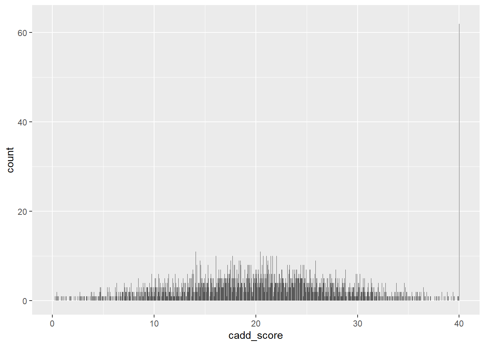
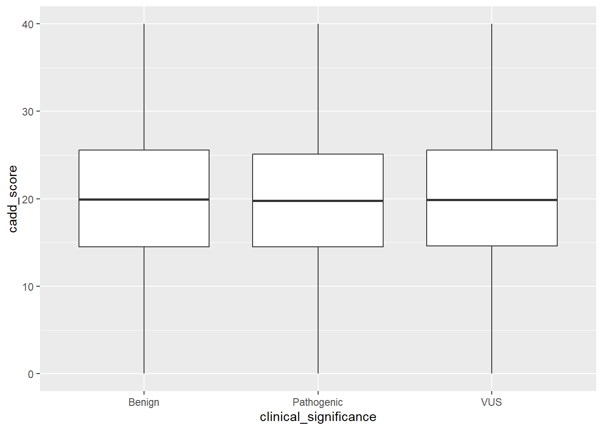
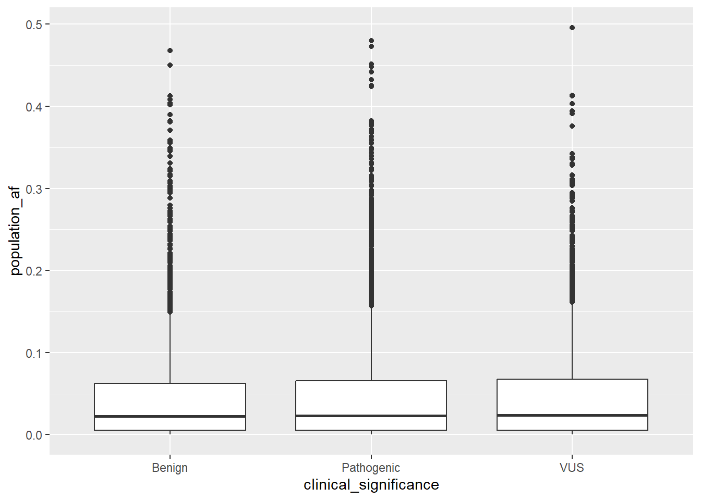
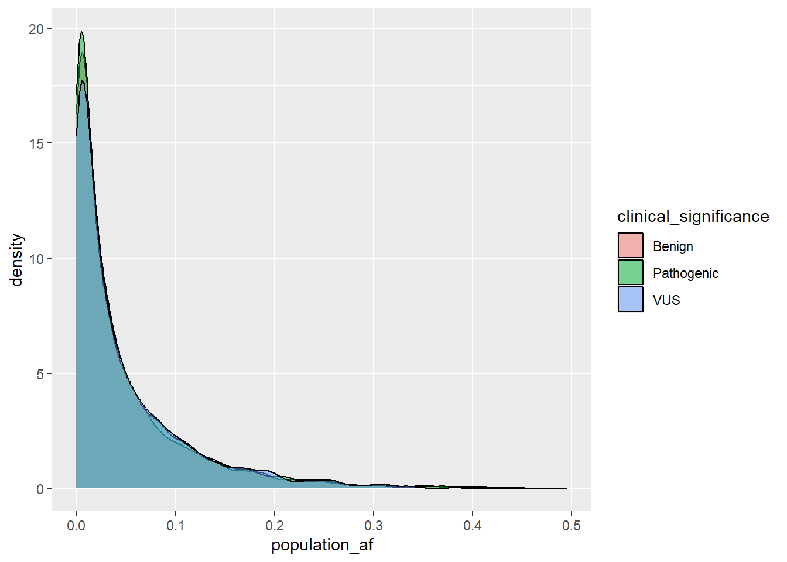
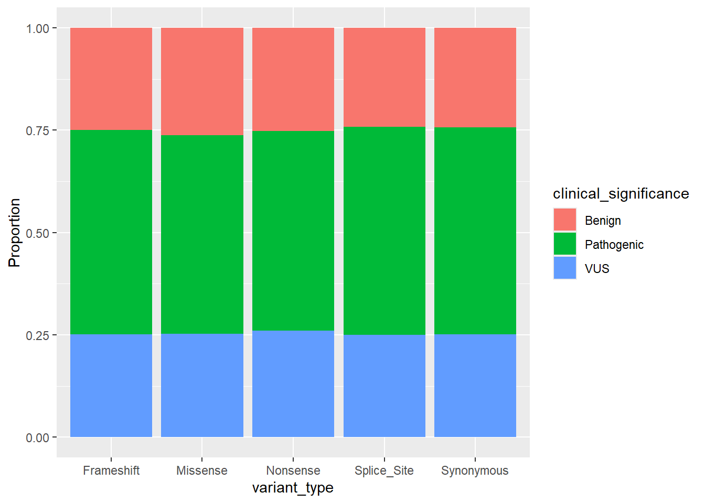
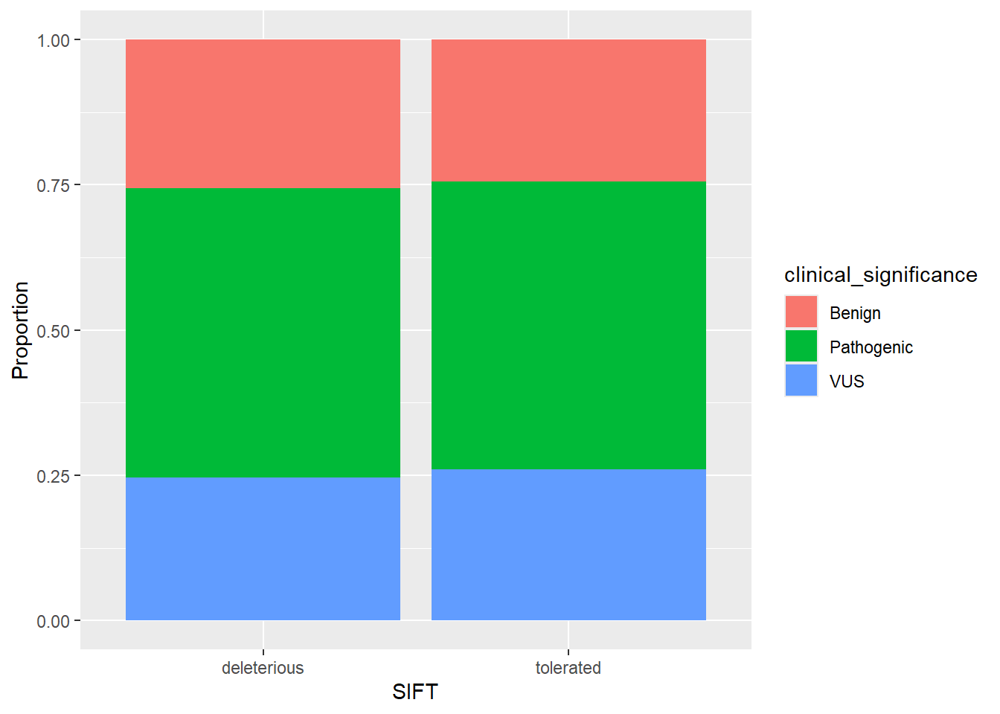
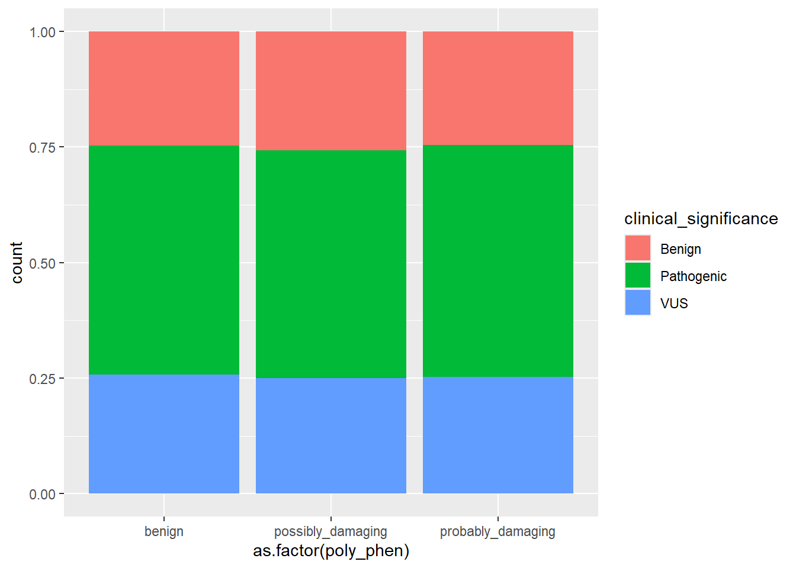
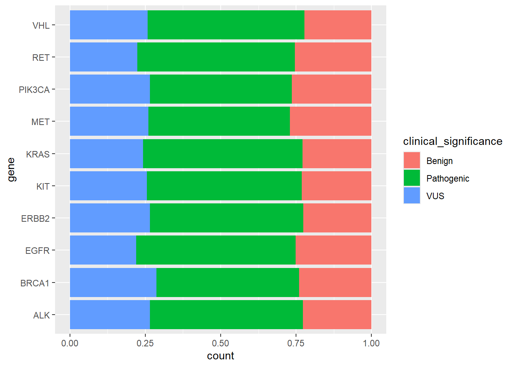
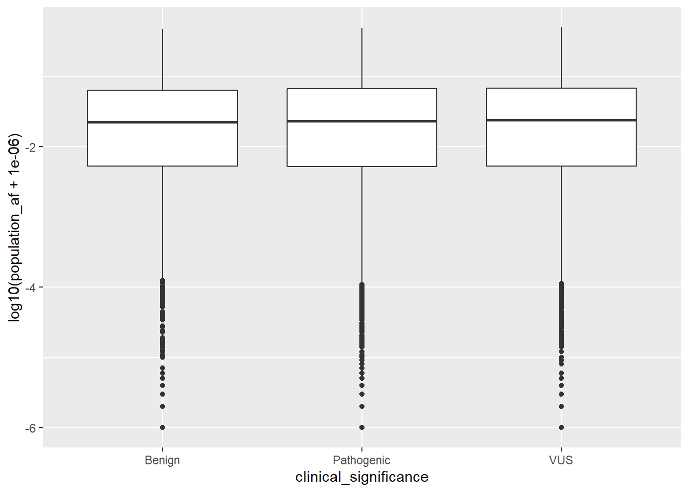

Code
library(tidyverse)
library(janitor)
library(randomForest)library(tidyverse)
library(janitor)
library(randomForest)The goal is to predict harmful genetic mutations using R. i.e. Predict “Pathogenic” gene mutation with Machine Learning.
Let’s narrow this down to more specific questions. I will first learn the dataset.
df <- read_csv("data/cancer_variant_prioritization_dataset.csv")
head(df,10)# A tibble: 10 × 9
Chromosome Position Gene Variant_Type Population_AF CADD_Score SIFT
<dbl> <dbl> <chr> <chr> <dbl> <dbl> <chr>
1 7 190381136 BRAF Synonymous 0.0759 17.0 deleterious
2 20 128450142 RET Missense 0.208 6.1 deleterious
3 15 22488129 MET Synonymous 0.0571 23.6 deleterious
4 11 35360856 BRCA2 Frameshift 0.0818 24.7 deleterious
5 8 49032280 TP53 Synonymous 0.0328 18.6 deleterious
6 21 193565900 BRAF Splice_Site 0.0148 10.7 tolerated
7 7 137811857 BRCA2 Synonymous 0.121 23.1 deleterious
8 19 194114942 KRAS Synonymous 0.00408 18.8 tolerated
9 11 192655961 RB1 Nonsense 0.000512 19.4 deleterious
10 11 118846940 BRAF Splice_Site 0.0353 20.6 tolerated
# ℹ 2 more variables: PolyPhen <chr>, Clinical_Significance <chr>summary(df) Chromosome Position Gene Variant_Type
Min. : 1.00 Min. : 8982 Length:10000 Length:10000
1st Qu.: 6.00 1st Qu.: 49837734 Class :character Class :character
Median :12.00 Median : 98943873 Mode :character Mode :character
Mean :11.58 Mean : 99546114
3rd Qu.:17.00 3rd Qu.:149470923
Max. :22.00 Max. :199991004
Population_AF CADD_Score SIFT PolyPhen
Min. :0.000000 Min. : 0.00 Length:10000 Length:10000
1st Qu.:0.005206 1st Qu.:14.54 Class :character Class :character
Median :0.023141 Median :19.84 Mode :character Mode :character
Mean :0.047967 Mean :19.93
3rd Qu.:0.065188 3rd Qu.:25.33
Max. :0.495646 Max. :40.00
Clinical_Significance
Length:10000
Class :character
Mode :character
CADD_score of 40 seems like an extreme outlier, especially since the 3rd quarter is 25.33. I will later check to see how many rows have the same score and determine if it should be removed or not. At this stage I don’t think this variable is that important to be included anyway, since it is a score, it is likely to have strong relationship with the outcome. Otherwise there does not seem to be any other big issues.
A lot of these variables should be changed to factors.
# Change the variable names to make it all lower case (consistent across variables)
df <- df %>% clean_names()colSums(is.na(df)) chromosome position gene
0 0 0
variant_type population_af cadd_score
0 0 0
sift poly_phen clinical_significance
0 0 0 No missing values found.
#Combine the two values to "Pathogenic", otherwise everything else is kept as is
df <- df %>% mutate(clinical_significance = case_when(
clinical_significance %in% c("Pathogenic", "Likely_pathogenic") ~ "Pathogenic",
TRUE ~ clinical_significance
))VUS means “Variants of Uncertain Significance”. The likely pathogenic and pathogeniccategories were combined to reduce label ambiguity. This resulted in a moderately imbalanced dataset, which was accounted for during analysis by focusing on proportional comparisons rather than absolute counts.
#Change to factors
df <- df %>% mutate(chromosome = as.factor(chromosome),
gene = as.factor(gene),
variant_type = as.factor(variant_type),
sift = as.factor(sift),
poly_phen = as.factor(poly_phen),
clinical_significance = as.factor(clinical_significance))df <- df %>% distinct()
head(df,10)# A tibble: 10 × 9
chromosome position gene variant_type population_af cadd_score sift
<fct> <dbl> <fct> <fct> <dbl> <dbl> <fct>
1 7 190381136 BRAF Synonymous 0.0759 17.0 deleterious
2 20 128450142 RET Missense 0.208 6.1 deleterious
3 15 22488129 MET Synonymous 0.0571 23.6 deleterious
4 11 35360856 BRCA2 Frameshift 0.0818 24.7 deleterious
5 8 49032280 TP53 Synonymous 0.0328 18.6 deleterious
6 21 193565900 BRAF Splice_Site 0.0148 10.7 tolerated
7 7 137811857 BRCA2 Synonymous 0.121 23.1 deleterious
8 19 194114942 KRAS Synonymous 0.00408 18.8 tolerated
9 11 192655961 RB1 Nonsense 0.000512 19.4 deleterious
10 11 118846940 BRAF Splice_Site 0.0353 20.6 tolerated
# ℹ 2 more variables: poly_phen <fct>, clinical_significance <fct>Just also make sure you are using the correct table type (In this case, I want to use tibble so this is fine)
summary(df) chromosome position gene variant_type
17 : 510 Min. : 8982 EGFR : 556 Frameshift :2030
22 : 498 1st Qu.: 49837734 KIT : 546 Missense :1949
13 : 489 Median : 98943873 PIK3CA : 520 Nonsense :1966
15 : 488 Mean : 99546114 VHL : 513 Splice_Site:1961
2 : 463 3rd Qu.:149470923 ERBB2 : 508 Synonymous :2094
12 : 459 Max. :199991004 KRAS : 507
(Other):7093 (Other):6850
population_af cadd_score sift poly_phen
Min. :0.000000 Min. : 0.00 deleterious:4968 benign :3426
1st Qu.:0.005206 1st Qu.:14.54 tolerated :5032 possibly_damaging:3251
Median :0.023141 Median :19.84 probably_damaging:3323
Mean :0.047967 Mean :19.93
3rd Qu.:0.065188 3rd Qu.:25.33
Max. :0.495646 Max. :40.00
clinical_significance
Benign :2495
Pathogenic:4971
VUS :2534
One thing I noticed is the significantly high population_af max of 0.49. We will also need to check to see if it is an outlier or not. Variants with high allele frequency (~0.5) means it is common in the population and are therefore less likely to be pathogenic. If it is associated with “benign” outcome, it can be concluded as normal.
df %>% arrange(desc(population_af))# A tibble: 10,000 × 9
chromosome position gene variant_type population_af cadd_score sift
<fct> <dbl> <fct> <fct> <dbl> <dbl> <fct>
1 17 22467919 BRCA2 Missense 0.496 34.1 deleterious
2 8 158606238 PTEN Nonsense 0.480 8.97 tolerated
3 22 129673361 PIK3CA Synonymous 0.473 16.6 deleterious
4 4 64903428 EGFR Missense 0.468 28.3 tolerated
5 10 41400091 APC Nonsense 0.451 21.4 tolerated
6 12 17569264 CDKN2A Splice_Site 0.450 21.0 deleterious
7 21 186739055 ALK Splice_Site 0.448 19.9 deleterious
8 4 185675041 BRCA1 Splice_Site 0.442 31.4 tolerated
9 17 181808242 MET Splice_Site 0.432 17.6 deleterious
10 12 19397126 NRAS Missense 0.425 20.6 tolerated
# ℹ 9,990 more rows
# ℹ 2 more variables: poly_phen <fct>, clinical_significance <fct>Now we will evaluate the data visually. The possible outliers of my concern are in: cadd_score and population_af so we will look at those first.
ggplot(df, aes(x = cadd_score)) +
geom_bar()
Ignoring the two end values, the cadd score follows a normal distribution.
df %>%
ggplot(aes(x = clinical_significance, y = cadd_score)) +
geom_boxplot()
df %>%
ggplot(aes(x = clinical_significance, y = population_af)) +
geom_boxplot()
df %>%
ggplot(aes(x = population_af, fill = clinical_significance)) +
geom_density(alpha = 0.5)
My assumption was that benign proteins would be more common therefore have higher population_af. Both boxplot and the density plot show that population_af is equally distributed across the three clinical_significance groups.
Although allele frequency is generally expected to be lower in pathogenic variants, the distributions show substantial overlap across categories, indicating that allele frequency alone is not sufficient for classification. Single-feature analysis showed overlapping distributions, motivating the use of multivariate models.
df %>%
ggplot(aes(x = variant_type, fill = clinical_significance)) +
geom_bar(position = "fill") +
labs(y = "Proportion")
df %>%
ggplot(aes(x = as.factor(sift), fill = clinical_significance)) +
geom_bar(position = "fill") +
labs(x = "SIFT", y = "Proportion")
names(df)[1] "chromosome" "position" "gene"
[4] "variant_type" "population_af" "cadd_score"
[7] "sift" "poly_phen" "clinical_significance"df %>%
ggplot(aes(x = as.factor(poly_phen), fill = clinical_significance)) +
geom_bar(position = "fill")
top_genes <- df %>%
count(gene, sort = TRUE) %>%
slice_head(n = 10) %>%
pull(gene)
df %>%
filter(gene %in% top_genes) %>%
ggplot(aes(x = gene, fill = clinical_significance)) +
geom_bar(position = "fill") +
coord_flip()
To reduce skewness
df %>%
ggplot(aes(x = clinical_significance, y = log10(population_af + 1e-6))) +
geom_boxplot()
The distributions all these graphs show substantial overlap across clinical significance categories, suggesting that no single feature is sufficient to distinguish pathogenic variants.
VUS will be removed as it is an undetermined outcome.
model <- df %>%
filter(clinical_significance != "VUS") %>%
mutate(
clinical_significance = droplevels(as.factor(clinical_significance))
)
df_model <- glm(
clinical_significance ~
cadd_score +
sift +
poly_phen +
population_af +
variant_type,
data = model,
family = "binomial"
)summary(df_model)
Call:
glm(formula = clinical_significance ~ cadd_score + sift + poly_phen +
population_af + variant_type, family = "binomial", data = model)
Coefficients:
Estimate Std. Error z value Pr(>|z|)
(Intercept) 0.739510 0.094924 7.791 6.67e-15 ***
cadd_score -0.002685 0.003133 -0.857 0.391
sifttolerated 0.040250 0.049130 0.819 0.413
poly_phenpossibly_damaging -0.050953 0.059975 -0.850 0.396
poly_phenprobably_damaging 0.019180 0.060047 0.319 0.749
population_af 0.026134 0.384974 0.068 0.946
variant_typeMissense -0.082662 0.077343 -1.069 0.285
variant_typeNonsense -0.035128 0.077678 -0.452 0.651
variant_typeSplice_Site 0.043608 0.078006 0.559 0.576
variant_typeSynonymous 0.034337 0.076673 0.448 0.654
---
Signif. codes: 0 '***' 0.001 '**' 0.01 '*' 0.05 '.' 0.1 ' ' 1
(Dispersion parameter for binomial family taken to be 1)
Null deviance: 9513.2 on 7465 degrees of freedom
Residual deviance: 9506.6 on 7456 degrees of freedom
AIC: 9526.6
Number of Fisher Scoring iterations: 4Logistic regression analysis showed that none of the selected features were statistically significant predictors of clinical significance. The minimal reduction in deviance suggests that these variables, when used individually or jointly, have limited predictive power in this dataset.
These findings indicate that more complex models or additional features may be required to accurately classify variant pathogenicity.
Random Forest can handle interactions and non-linear relationships. It can also work well with mixed data types.
set.seed(123)
train_index <- sample(1:nrow(model), 0.7 * nrow(model))
train_data <- model[train_index, ]
test_data <- model[-train_index, ]rf_model <- randomForest(
clinical_significance ~
cadd_score +
sift +
poly_phen +
population_af +
variant_type,
data = train_data,
ntree = 100
)
rf_model
Call:
randomForest(formula = clinical_significance ~ cadd_score + sift + poly_phen + population_af + variant_type, data = train_data, ntree = 100)
Type of random forest: classification
Number of trees: 100
No. of variables tried at each split: 2
OOB estimate of error rate: 36.03%
Confusion matrix:
Benign Pathogenic class.error
Benign 123 1647 0.93050847
Pathogenic 236 3220 0.06828704importance(rf_model) MeanDecreaseGini
cadd_score 593.68803
sift 38.58422
poly_phen 71.65466
population_af 606.74189
variant_type 120.58119rf_pred <- predict(rf_model, test_data)
table(rf_pred, test_data$clinical_significance)
rf_pred Benign Pathogenic
Benign 37 74
Pathogenic 688 1441mean(rf_pred == test_data$clinical_significance)[1] 0.6598214#Probability the observation is Pathogenic
glm_prob <- predict(df_model, test_data, type = "response")
#If probability > 0.5 --> Assign as Pathogenic
glm_pred <- ifelse(glm_prob > 0.5, "Pathogenic", "Benign")
#Change to factor (as it is currently character)
glm_pred <- factor(glm_pred, levels = levels(test_data$clinical_significance))
#This is the same as glm_pred <- as.factor(glm_pred) but if there is only one value
#(e.g. Only `Pathogenic`) it will only have that value as the factor.
#Error: test_data may have both `benign` and `Pathogenic`
# GLM accuracy
mean(glm_pred == test_data$clinical_significance)[1] 0.6763393table(glm_pred, test_data$clinical_significance)
glm_pred Benign Pathogenic
Benign 0 0
Pathogenic 725 1515table(rf_pred, test_data$clinical_significance)
rf_pred Benign Pathogenic
Benign 37 74
Pathogenic 688 1441GLM predicts only Pathogenic andignores Benign completely. RF predicts both classes and captures some structure.
–>
Although logistic regression achieved slightly higher overall accuracy, it failed to correctly classify any benign variants, predicting all observations as pathogenic. In contrast, the Random Forest model demonstrated improved class balance by correctly identifying both benign and pathogenic variants. This highlights the limitation of accuracy as a sole evaluation metric and the importance of examining class-wise performance. Overall, RF is slightly better at predicting, but further evaluation is required.
I could tune RF model, or add other variables such as genes.
rf_model <- randomForest(
clinical_significance ~ .,
data = train_data,
ntree = 100,
classwt = c(Benign = 2, Pathogenic = 1),
mtry = 2
)
rf_model
Call:
randomForest(formula = clinical_significance ~ ., data = train_data, ntree = 100, classwt = c(Benign = 2, Pathogenic = 1), mtry = 2)
Type of random forest: classification
Number of trees: 100
No. of variables tried at each split: 2
OOB estimate of error rate: 34.56%
Confusion matrix:
Benign Pathogenic class.error
Benign 41 1729 0.97683616
Pathogenic 77 3379 0.02228009I believed that gene should also be included as it is one of the most important factor to determine cancerous cells. I fine-tuned the Random Forest model: - Changing the classwt showed a lot more balanced class.error but higher error rate. - Other tuning did not change the outcome
Then I added all the variables. - Error rate again became the same as the initial model (~66% accuracy) but very biased error with predicting ~98% of Pathogenic correctly.
This project explored the classification of genetic variants into clinical significance categories using a combination of exploratory data analysis and machine learning models in R.
Initial exploratory analysis showed that individual features — including variant type, population allele frequency, SIFT, and PolyPhen — exhibited substantial overlap across classes. This indicated that no single variable alone was sufficient to distinguish between benign and pathogenic variants.
Logistic Regression (GLM): - The logistic regression model failed to distinguish between classes effectively. - It predicted nearly all observations as pathogenic, reflecting bias toward the majority class. - This resulted in misleadingly high accuracy but poor practical performance.
Random Forest: - The Random Forest model improved predictive performance by capturing non-linear relationships and interactions between variables. - However, the model initially showed strong bias toward the majority class (pathogenic), with very high error rates for benign variants.
To address class imbalance, class weighting was introduced in the Random Forest model. This improved balance between class-specific error rates. However, overall accuracy decreased, highlighting a trade-off between: - fairness across classes - overall predictive accuracy
This demonstrates that accuracy alone is not a sufficient evaluation metric, particularly in imbalanced datasets.
Overall, this analysis demonstrates that predicting variant pathogenicity is a complex problem requiring a multivariate approach. While Random Forest models offer improved performance over linear models, careful consideration must be given to class imbalance and feature selection.
Future work could explore: - more advanced models (e.g., gradient boosting) - feature engineering (e.g., grouping genes or incorporating biological pathways) - improved evaluation metrics (e.g., precision, recall, F1 score)
A work by Reina Kaino
reinasdatastudio@gmail.com
@reinas_data.studio